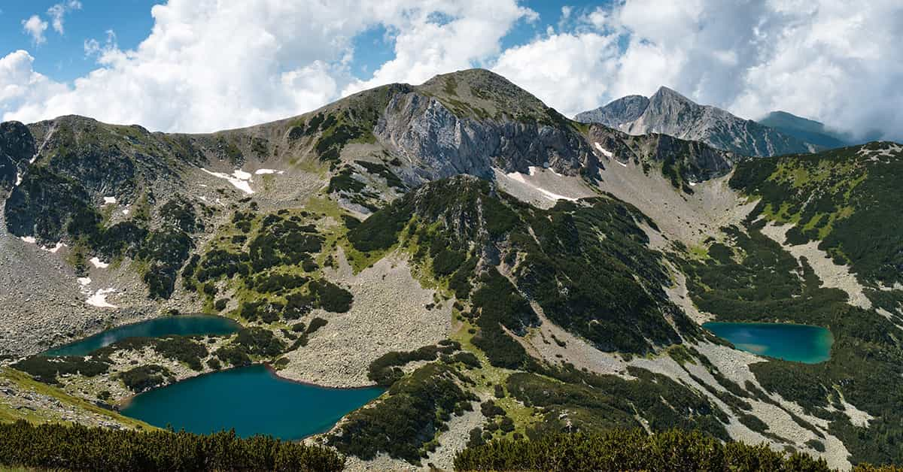

Explore Bulgarian Nature
Explore Bulgarian Nature
" What is the good of your stars and trees, your sunrise and the wind, if they do not enter into our daily lives? "
Bulgaria lies on the eastern edge of the Balkan
Peninsula. It’s a country steeped in rich history and stunning scenery. Bulgaria is famous for being one of
the oldest countries in Europe.
Its diverse landscape boasts mountains, beaches and mineral springs.
Bulgaria is also known for its rose oil, lavender, rakiya, and wine. It introduced the world to yogurt and the
Cyrillic alphabet too. Bulgaria is a beautiful blend of old and new — with boundless attractions and cultural
quirks to boot.
Popular Clibming Destinations
Black Peak hosts a weather station built in 1935. The station provides refuge in bad weather (no tourist accommodation though), and has a well supplied cafeteria. The nearest mountain chalets are Aleko Chalet (1810 m) and Kumata Chalet (1725 m). Cherni Vrah has a special place in Bulgarian tourism. The first group of tourists to climb the peak involved 300 people, among was Ivan Vazov, who was led by another famous Bulgarian writer, Aleko Konstantinov. The event took place on August 27, 1895.
vitosha mountain
2290 m
≈ 0.3° (annual average)
Botev Peak is at 2,376 metres above sea level, the highest peak of the Balkan Mountains. Until 1950, when it was renamed in honour of Bulgarian poet and revolutionary Hristo Botev, the peak was called Yumrukchal. The situation at the top near the geographical center of Bulgaria contribute to national radio broadcasts and television broadcast here to cover more than 65% throughout the country, also in parts of Romania and Turkey.
stara planina
2376 m
≈ 0.4° (annual average)
Musala from Turkish "near God" or "place for prayer" is the highest peak in the Rila Mountains, as well as in Bulgaria and the entire Balkan Peninsula. Musala is situated within the Rila National Park, which is noted for its rich flora, including species such as Macedonian Pine and Bulgarian Fir. All major mountain ranges of Bulgaria can be seen from the top; these include Vitosha, Sredna Gora, the Balkan Mountains, the Rhodope Mountains, Pirin, Osogovo, Ruy Mountain and the rest of Rila.
rila mountain
2925 m
≈ -2.1° (annual average)